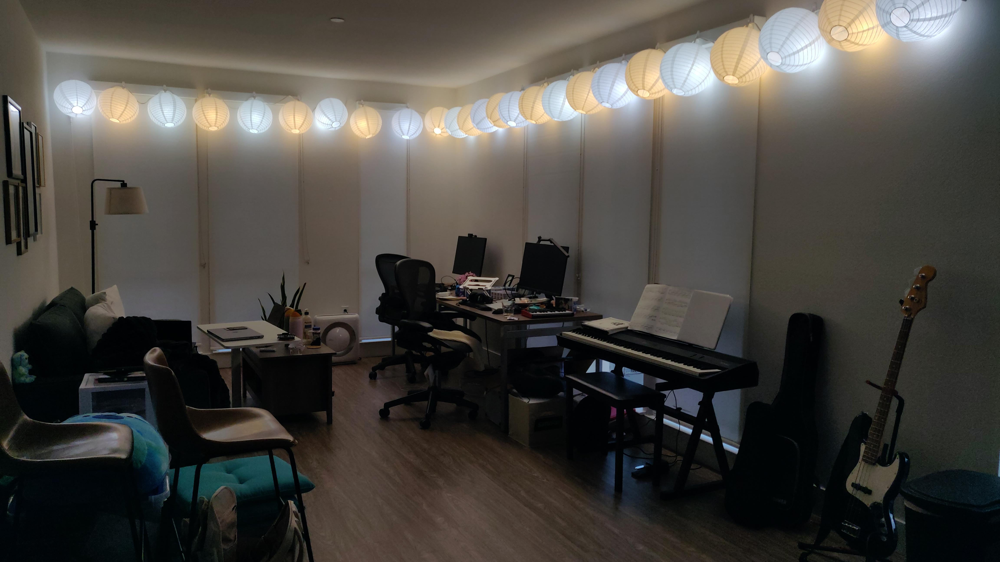

My lumenator
Even in Berkeley, we get less than ten hours of sunlight a day in January. I feel bleh when the sun sets at 5pm.
So, last year, I built a lumenator! It's a string of 25 13-watt (100-watt-equivalent), 1,500-lumen lightbulbs hung from the top of my apartment walls using Command hooks. I put paper lanterns on the lights. They're aesthetic and, when I look directly at the lights by accident, they don't hurt my eyes.
Look how dark my living room is compared to the lumenator!

Supplies
-
Lightbulbs
- 3 packs of 4 2700k bulbs
- 4 packs of 4 5000k bulbs
- (I don't recommend the brand I originally bought. They claim their bulbs have a lifetime of 25,000 hours but many have burnt out in less than 20% of that time, especially the 2700k bulbs.)
-
Outdoor string light cord with 25 sockets
- Important note: By default, the bulbs don’t fit in the sockets on this cord. I had to use an Exacto knife to cut off some of the rubber around each socket
-
2 packs of 24 Command hooks
- If only they came in packs of 25!
- 3 packs of 10 12-inch paper lanterns
-
An extension cord
- I got a 20-footer, which ended up being overkill
You could find some of these things for less on AliExpress.
My friend Jenn recommended using a mix of 5000k (white) and 2700k (yellow) bulbs. The bulbs I bought claim to have a CRI (colour rendering index) of 90 or greater. I’m not sure. Compared to direct sunlight, colours seem muted under the lumenator.
The setup cost 210.10 USD up-front and uses about 117 kWh/month (25 bulbs * 13 W/bulb * 12 hours-in-use/day * 30 days/month), which costs about $45/month in Berkeley.
I didn’t go for dimmable bulbs or a dimmer. Usually, I turn the lumenator on when the sun rises and leave it on until 8pm. Then, I wind down for bed.
Construction and installation
The first time I built and installed the lumenator, it took about three hours. A few months later, I uninstalled and disassembled it. That took about 90 minutes. Later still, reassembling and reinstalling the lumenator also took about three hours.
Assembly and installation:
- Go around the perimeter of the room, standing on a chair or ladder and applying the Command hooks. Use a tape measure to ensure the hooks are 14-16 inches apart.
- Use an Exacto knife to cut off some of the rubber around each of the sockets on the cord. Not all the rubber, just enough that you can screw in the bulbs. Or buy a different cord!
- Screw in the bulbs
- Unfold 25 paper lanterns
- Each socket is attached to a small cord, a few inches long, that hangs off the main cord. Thread each of the small cords through the top of a paper lantern
- After waiting an hour for the Command strips to set, go around the room on a chair or ladder again, hanging up each bulb + lantern by the hook on the end of its small cord
- Plug ‘er into the wall!
Results
I’m happy to have my lumenator, but I wish it were brighter.
The lumenator outputs a lot of lumens,
25 * 1,500 = 37,500 to be exact. But a lot of lumens do
not a lot of lux make. (Lumens measure light output; lux measures
light received at a particular distance.) Because I'm sitting three or
four metres from the bulbs and the paper lanterns absorb a lot of the
light, I only receive about 1,000 lux. This is the same as the light
from the sun on a cloudy day (Wikipedia).
(I measured lux with this Android app, which uses my phone’s light sensor. I checked the sensor’s calibration by measuring the lux of a bulb with known brightness at a fixed distance. Surprisingly, the calibration was almost perfect!)
At night or on a cloudy day, the extra 1,000 lumens makes a big difference. On a sunny day, it’s still noticeable, and I like to have it on.
I could lux-maxx by:
-
Removing the aesthetic and eye-saving paper lanterns
- I’m not sure how many lux this would add
-
Using brighter bulbs
- This is the first result on Amazon for “2500 lumen led bulb 5000k”. It’s a 23-watt bulb. Using 25 of these would increase the lumens and lux by 60% and the cost by 75%. The product page doesn’t say anything about CRI
-
Adding a second lumenator
- This would roughly double the lumens, lux, and cost
Other experiments
Before building this lumenator, I played around with these 21,000-lumen lamps. I hung one up at the juncture of a wall and the ceiling. These are bright and concentrated light sources. It feels easy to look directly at them and hurt my eyes.